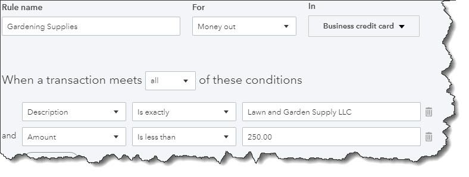
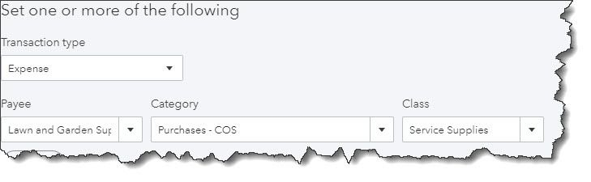

Maintaining your transaction registers conscientiously leads to a clearer understanding of your finances.
Last month, we talked about the types of best practices that can lead to more effective use of QuickBooks Online and, ultimately, more thorough knowledge of your finances. The first one was this: Go through your new transactions every day. Categorizing and otherwise expanding on the data brought in by your financial institutions really pays off when it comes to customer billing, reports, and taxes.
Granted, this habit will add time to your daily accounting chores. But there’s a tool on the site that can greatly accelerate this process: Rules. This feature must be used with care to avoid mischaracterizing or, worse, losing track of critical transactions. Here’s how it works.
There are two ways to create Rules. The easiest is to start with an existing transaction. Hover over Banking in the left vertical pane and select Banking to open your transaction list. Be sure that you’re looking at transactions that are still For review, as these are the only ones that can be assigned to Rules.
Click on a transaction to open its expanded view. At the bottom of the small window that just opened, click on Create rule from this transaction. A screen like this will open:
QuickBooks Online’s Rules feature allows you to automatically document transactions that meet certain conditions.
Let’s say you own a lawn and garden maintenance company. You always order supplies from the same vendor, so there are numerous transactions every month. You want QuickBooks Online to automatically categorize and clear transactions under $250; above that, and you’d want to see them individually.
You’d start by naming the rule, designating it as Money out or Money in, and choosing an account (or leaving this option set at All bank accounts). Next, tell QuickBooks Online whether the conditions you’re about to establish should apply to all or How to Use Rules in QuickBooks Online Transactions. That is, if you’re setting multiple conditions, is it all right if just one meets the criteria, or must they all?
Below that, you’d specify the actual conditions that must be present for QuickBooks Online to handle similar transactions in the same way. In our example pictured above:
The transaction [Description] [is exactly] Lawn and Garden Supply LLC, and, The [Amount] [is less than] $250.
So, any transaction that comes into QuickBooks Online from your bank that has Lawn and Garden Supply LLC in the Description field and which is for less than $250 will be treated similarly. There are other options for the first two fields; you’ll find them by clicking the down arrow.
Now you have to tell QuickBooks Online what to do with the transactions that meet those criteria. Farther down on this screen, you’ll see these options:
QuickBooks Online will handle the transactions that meet the conditions you set by completing these fields.
Using the drop-down lists of options, you’ll select the Transaction Type, Payee, Category, and Class (if you use them). Every time a transaction comes in that meets the conditions you defined above, QuickBooks Online will apply these options.
Finally, you’ll have to choose from two different ways of processing these matching transactions. You can have QuickBooks Online Auto-categorize and auto-add, in which case the transactions will be automatically processed and moved out of the For review queue. In our example, we chose this so we didn’t have to work with transactions of less than $250; we only wanted to see more expensive purchases. If we had wanted QuickBooks Online to fill in those fields but still show us the transactions, we would have clicked in front of Auto-categorize and manually review. Clicking Save would move this Rule into a list that could be accessed by clicking Banking | Rules, where you can Edit or Delete them.
To recap, because of the Rule that was created here, any transaction in which the Description reads Lawn and Garden Supply LLC and which is for less than $250 will now be auto-completed and moved out of For Review. Any transaction for over that amount will remain in the queue for approval.
QuickBooks Online’s Rules can save time if you have a large volume of similar transactions. But if they’re not created with absolute accuracy, you risk mischaracterizing or missing transactions you should have reviewed before adding them to the Reviewed queue. We’d be happy to help here to ensure that that doesn’t happen, so that you can take full advantage of the helpful Rules feature.
To save time when reviewing QuickBooks Online banking transactions, you can apply automated Rules. Here’s how to get started. We can help you with this.
Did you know that QuickBooks Online’s Rules feature allows you to automatically categorize banking transactions that meet certain conditions to help you save time? Find out more here.
If your business processes a high volume of banking transactions, you might consider applying Rules to process them quickly. Ask us about this, we can help get you started.
If you’re planning to use QuickBooks Online’s Rules, please consult with us first. This feature once implemented can help you save time, but the set-up process can be complicated. We can help.